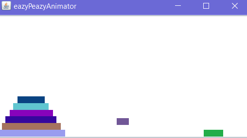
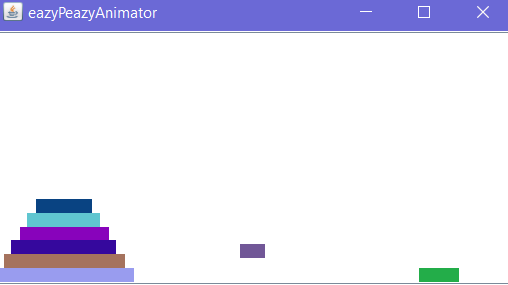

Easy Animator
 

The Easy Animator has the ability to animate inputted text files visually through Java and can output these visual motions as .txt or .svg files as well. Users also have the ability to edit a given visual animation by altering or editing the sequence of keyframes, or by changing the speed. Edited animations can be saved as .txt and .svg files, and other compatible text files can be loaded to display more than one animation at a time.
This was a partner assignment created as an end of semester project in Object-Oriented Design (CS3500) in Fall 2018 using only Java and the associated Java Swing library. Github code is available upon request.
Zodihacks allows users to journal or write anything about their day, or how they are feeling, and after analyzing the text for the 16 Myers-Briggs Type Indicator personas, a correlated zodiac sign is returned. This website was made while at HackBeanpot 2018 in Boston, MA.
We started this project using Indico's text analysis API for personas for Python, and used Flask framework as well as HTML and CSS to get the website up and running. I worked on the frontend assisting with some HTML templates, and the backend, helping connect and set up the API and Flask framework with Python.
I started this website while at a personal website work day hosted by Northeastern Women in Technology in January of 2018. Created with Bootstrap components and HTML/CSS. Last updated in January of 2019.